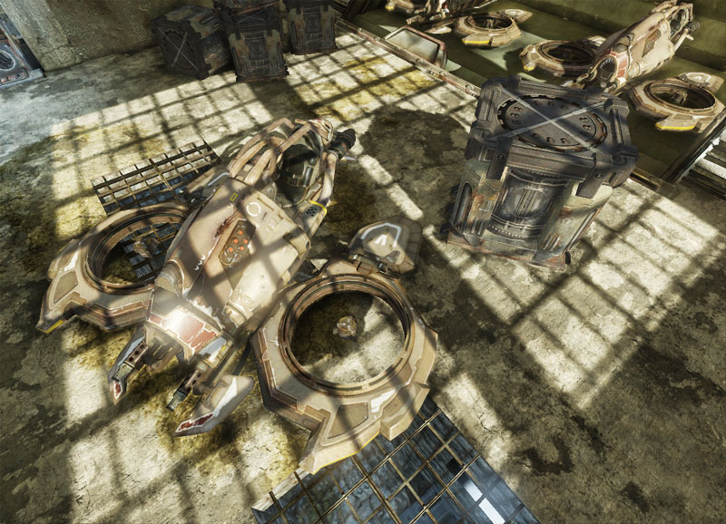
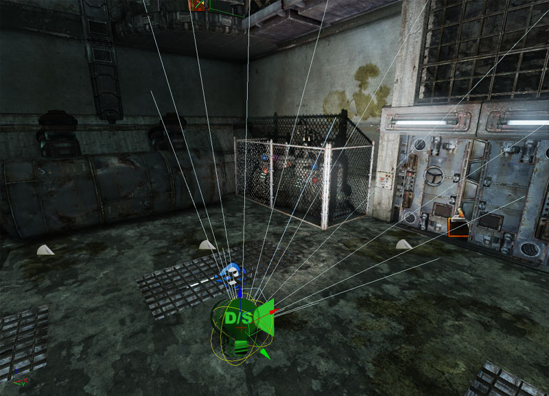

UDN
Search public documentation:
ShadowingReference
日本語訳
中国翻译
한국어
Interested in the Unreal Engine?
Visit the Unreal Technology site.
Looking for jobs and company info?
Check out the Epic games site.
Questions about support via UDN?
Contact the UDN Staff
中国翻译
한국어
Interested in the Unreal Engine?
Visit the Unreal Technology site.
Looking for jobs and company info?
Check out the Epic games site.
Questions about support via UDN?
Contact the UDN Staff
UE3 Home > Lighting & Shadows > Shadowing Reference
UE3 Home > Level Designer > Shadowing Reference
UE3 Home > Lighting Artist > Shadowing Reference
UE3 Home > Level Designer > Shadowing Reference
UE3 Home > Lighting Artist > Shadowing Reference
Shadowing Reference
Document Summary: A reference detailing the shadowing methods used in Unreal Engine 3.
Overview
Unreal Engine 3 uses several distinct shadowing solutions:
- Whole-scene dynamic shadows - Movable lights use whole-scene dynamic shadows.
- Per-object dynamic shadows - Immovable lights illuminating movable or dynamic objects use per-object dynamic shadows.
- Precomputed shadows - Immovable lights illuminating static objects use precomputed shadow maps.
- Precomputed lighting - Static lights illuminating static objects use precomputed light maps.
Light classes
For each type of light you can place in the world, there are different classes that control the shadowing behavior of the light. Those classes limit the light from changing in certain ways at runtime, or designate the light as a "dominant" light.
- The base class of each light (e.g. PointLight) is the static version of that light. It uses per-object dynamic shadows combined with precomputed lighting.
- The Movable subclass of that light may be moved at runtime. It uses whole-scene dynamic shadows.
- The Toggleable subclass of that light may not be moved, but it can change color and brightness at runtime. It uses per-object dynamic shadows combined with shadow maps.
- The Dominant subclass of that light is similar to Toggleable lights, but uses distance field shadow maps.
| SpotLight | Movable SpotLight | Toggleable SpotLight | Dominant SpotLight |
|---|
Recommended usage
For most lights, you should use the base light classes: PointLight, SpotLight and DirectionalLight. These classes have the least impact on runtime performance, since they all use precomputed lighting. For lights that don't need to move, but need to change their color, brightness or enabled state at runtime, you should use the Toggleable light subclasses: PointLightToggleable, SpotLightToggleable, DirectionalLightToggleable. These classes use precomputed shadows together with per-pixel lighting at runtime, and only have a small impact on runtime performance. For most scenes you will want to have a small number of lights that uses precomputed shadows with higher quality lighting than you can get with precomputed lighting. For that, you would use the Dominant light subclasses: DominantPointLight, DominantSpotLight and DominantDirectionalLight. These classes are similar to Toggleable light subclasses, but are restricted so each object can only be affected by a single Dominant light. This allows Dominant lights to be slightly more efficient at runtime than Toggleable lights. For more information, see Dominant Lights. For cases where you need a light to move, you must use the Movable light subclasses: PointLightMovable, SpotLightMovable, and DirectionalLightMovable. These classes compute shadowing and lighting every frame at runtime, so they have the largest impact on runtime performance.Shadow types
Per-object dynamic shadows
Immovable lights will use per-object dynamic shadows for the dynamic objects that they affect. The per-object dynamic shadows work by rendering a depth buffer for the object from the perspective of the light and then projecting it onto the world. Pixels that are further from the light than the depth in the projected shadow depth buffer are shadowed. A filter is used to create a soft edge between shadowed and lit areas. In this screen shot, the flying vehicle (Cicada) is casting a soft dynamic shadow on the bridge. The per-object dynamic shadow's quality and cost depends on how large the projected depth buffer frustum is on the screen, which depends on how big the dynamic object's bounding box is. This means that it works best on objects with a tight bounding box. Skeletal meshes without an associated physics asset will have a loose bounding box that doesn't change at runtime depending on joint animation, so they will have a low quality and expensive shadow. Thus skeletal meshes with a physics asset will have a tight bounding box computed each frame from the joint animation, so they will have higher quality and cheaper shadows. For that reason, you should create a physics asset? for every skeletal mesh, regardless of whether it will have physics-based animation or not. You can use the "show shadowfrustums" console command, or the shadow frustums option in the editor viewport's Show->Advanced Flags menu, to view the frustums used for per-object dynamic shadows. In this screen shot, the skeletal mesh does not have a physics asset assigned to it. Thus it's shadow frustum which is represented by the blue box (black outline added for visibility) is large and inefficient. In this screen shot, the skeletal mesh has a physics asset assigned to it. Thus it's shadow frustum which is represented by the blue box (black outline added for visibility) is tight and efficient. To handle shadows from static objects cast on dynamic objects, non-movable lights will create a second per-object projected shadow depth buffer. This depth buffer will be created from the static objects between the light and the dynamic object. In this screen shot, this skeletal mesh has shadows casted on it from precomputed shadows. Ensure that you have a DynamicLightEnvironments assigned to the dynamic skeletal mesh, with "Use Boolean Environment Shadowing" unchecked to allow dynamic pre-shadowing (off by default for SkeletalMeshCinematicActor). In this screen shot, this interpolated static mesh has shadows casted on it from the static environment geometry. Ensure that you have a DynamicLightEnvironment assigned to the interpolated static mesh, with "Use Boolean Environment Shadowing" unchecked to allow dynamic pre-shadowing (on by default for InterpActor).
In this screen shot, this interpolated static mesh has shadows casted on it from the static environment geometry. Ensure that you have a DynamicLightEnvironment assigned to the interpolated static mesh, with "Use Boolean Environment Shadowing" unchecked to allow dynamic pre-shadowing (on by default for InterpActor).
Modulated shadows
Per-object dynamic shadows may be modulated or normal. Normal shadows mask the contribution of the shadow-casting light to the shadow receiver, while modulated shadows only modulate the shadow receiver's final color by the modulated shadow color. Static lights require modulated shadows to combine the per-object dynamic shadows with the precomputed lighting that such static lights use. In this screen shot, normal shadowing is applied.  In this screen shot, modulated shadowing is applied with Mod Shadow Color set to 0.f, 0.f, 0.f, 1.f (Black). In this screen shot, Mod Shadow Color is set to 1.f, 0.f, 0.f, 1.f (Red).
Static lights and toggleable lights default to modulated shadows, while dominant lights default to normal shadows.
In this screen shot, Mod Shadow Color is set to 1.f, 0.f, 0.f, 1.f (Red).
Static lights and toggleable lights default to modulated shadows, while dominant lights default to normal shadows.
Whole-scene dynamic shadows
For Movable lights, whole-scene dynamic shadows are used. The whole-scene shadows work similarly to the projected shadow depth buffers of per-object dynamic shadows, but instead of creating a projected shadow-depth buffer for each object, they use a fixed number of shadow depth buffers for the whole scene. A spot light uses a single shadow depth buffer, point lights use six shadow depth buffers corresponding to the faces of a cube, and directional lights use one or more cascaded shadow depth buffers centered around the viewer. In this screen shot, a movable point light is casting whole-scene shadows. In this screen shot, a movable spot light is casting whole-scene shadows.  In this screen shot, a moveable dominant directional light is casting whole-scene shadows. Unlike per-object dynamic shadows, whole-scene dynamic shadows cannot be modulated.Cascaded shadow maps
Dominant directional lights can use cascaded shadow depth buffers for whole-scene shadows. If the light is immovable, the cascaded shadow depth buffers can be blended with the precomputed shadows, using cascaded shadow depth buffers for nearby objects and precomputed shadows for distant objects.Precomputed shadows
Toggleable lights use precomputed shadows. The precomputed shadows are stored using either a gray scale mask that is applied when rendering the light, or for dominant lights as a signed distance field.Precomputed lighting
Static lights use precomputed lighting on static objects. The precomputed lighting combines all static lights together, so the lights can no longer be separated at runtime. Because of that, static lights can only cast modulated per-object shadows from dynamic objects.
Shadow opacity
Masked material opacity will be respected by all types of shadows. Translucent material opacity will only be respected for shadows cast by static objects from Toggleable lights or static lights. To make the translucent materials cast dynamic shadows as masked materials, set the material's Cast Lit Translucency Shadow As Masked property to true and set the Opacity Mask material parameter.
Shadow and light-map resolution
Precomputed Shadows and BSP
To change the resolution of the shadow maps and light maps used for a BSP surface, select the surface or surfaces, and hit F5. This will bring up the Surface Properties menu. Under Pan/Rot/Scale you will find a Light map value. The lower the value, the higher resolution the resulting shadows will be, as illustrated in the image below:Precomputed Shadows and Static Meshes
Precomputed shadows are cast on static mesh geometry as well. By default, shadow factors are calculated per vertex. For better shadow resolution, a shadow map should be generated for each static mesh. A shadow map requires that all UV data be unique. No mirroring or tiling is allowed. If your static mesh's UVs have mirroring, stacking, or tiling, then you will need to create a second set of new unique UVs. For more information about how to set up multiple sets of UVs see the VertexBlendingTutorial. Open your static mesh in the Static Mesh Editor (double click it in the Generic Browser window). Fill the desired value into LightMapResolution. The default value of 0 means no shadow map will be created. Keep in mind that an independent shadow map will be generated for each instance of your mesh in the level file, which could potentially have dramatic memory ramifications. If your mesh has multiple UVs, select the set you want to use for the shadow map in LightMapCoordinateIndex. The default is 0, which is the original set of UVs. Notice that the number of UV channels is listed in the top left of the render window. Below is an illustration of per-vertex shadowing vs. shadow maps.Shadowing options
| Class | Group | Property | Default | Description |
|---|---|---|---|---|
| DirectionalLightComponent | Cascaded Shadow Maps | Whole Scene Dynamic Shadow Radius | 0 or 2000 | Radius of the whole scene dynamic shadow centered on the viewer, which replaces the precomputed shadows based on distance from the camera. A Radius of 0 disables the dynamic shadow. This feature is currently only supported on dominant directional lights. |
| DirectionalLightComponent | Cascaded Shadow Maps | Num Whole Scene Dynamic Shadow Cascades | 1 | Radius of the whole scene dynamic shadow centered on the viewer, which replaces the precomputed shadows based on distance from the camera. A Radius of 0 disables the dynamic shadow. This feature is currently only supported on dominant directional lights. |
| DirectionalLightComponent | Cascaded Shadow Maps | Cascade Distribution Exponent | 4 | Exponent that is applied to the cascade transition distances as a fraction of WholeSceneDynamicShadowRadius. An exponent of 1 means that cascade transitions will happen at a distance proportional to their resolution. A value greater than 1 brings transitions closer to the camera. |
| PointLightComponent | Lightmass | Shadow Exponent | 2 | The radius of the light's emissive surface, not the light's influence. |
| LightComponent | Light Component | Cast Shadows | True | Whether the light should cast any shadows. |
| LightComponent | Light Component | Cast Static Shadows | True | Whether the light should cast shadows from static objects. Also requires Cast Shadows to be set to True. |
| LightComponent | Light Component | Cast Dynamic Shadows | Varies | Whether the light should cast shadows from dynamic objects. Also requires Cast Shadows to be set to True. |
| LightComponent | Light Component | Cast Composite Shadows | True | Whether the light should cast shadows from objects with composite lighting (i.e. an enabled light environment). |
| LightComponent | Light Component | Affect Composite Shadow Direction | True | If bCastCompositeShadow=TRUE, whether the light should affect the composite shadow direction. |
| LightComponent | Light Component | Non Modulated Self Shadowing | False | If enabled and the light casts modulated shadows, this will cause self-shadowing of shadows rendered from this light to use normal shadow blending. This is useful to get better quality self shadowing while still having a shadow on the lightmapped environment. When enabled it incurs most of the rendering overhead of both approaches combined. |
| LightComponent | Light Component | Self Shadow Only | False | Whether the light should cast shadows only from a dynamic object onto itself. |
| LightComponent | Light Component | Force Dynamic Light | False | Whether the light should cast shadows as if it was movable, regardless of its class. |
| LightComponent | Light Component | Light Shadow Mode | Varies | The type of shadowing to apply for the light. |
| LightComponent | Light Component | Shadow Filter Quality | SFQ_Low | The quality of filtering to use for dynamic shadows cast by the light. |
| LightComponent | Light Component | Mod Shadow Color | black | The color to modulate with pixels that receive a dynamic shadow from this light (if it casts modulated shadows). |
| LightComponent | Light Component | Min Shadow Resolution | 0 | Override for min dimensions (in texels) allowed for rendering shadow subject depths. This also controls shadow fading, once the shadow resolution reaches MinShadowResolution it will be faded out completely. A value of 0 defaults to MinShadowResolution in SystemSettings. |
| LightComponent | Light Component | Max Shadow Resolution | 0 | Override for max square dimensions (in texels) allowed for rendering shadow subject depths. A value of 0 defaults to MaxShadowResolution in SystemSettings. |
| LightComponent | Light Component | Shadow Fade Resolution | 0 | Resolution in texels below which shadows begin to be faded out. Once the shadow resolution reaches MinShadowResolution it will be faded out completely. A value of 0 defaults to ShadowFadeResolution in SystemSettings. |
| LightComponent | Light Component | Use Direct Light Map | True | If set to false on a static light, forces it to use precomputed shadowing instead of precomputed lighting. |
| Material | Translucency | Cast Lit Translucency Shadow As Masked | False | Whether to treat the material's opacity channel as a mask rather than fractional translucency in dynamic shadows. |
| PrimitiveComponent | Lighting | Cast Shadow | True | Controls whether the primitive component should cast a shadow or not. Currently dynamic primitives will not receive shadows from static objects unless both this flag and bCastDynamicSahdow are enabled. |
| PrimitiveComponent | Lighting | Cast Dynamic Shadow | True | Controls whether the primitive should cast shadows in the case of non precomputed shadowing like e.g. the primitive being in between a light and a dynamic object. This flag is only used if CastShadow is TRUE. Currently dynamic primitives will not receive shadows from static objects unless both this flag and CastShadow are enabled. |
| PrimitiveComponent | Lighting | Cast Static Shadow | True | Controls whether the primitive should cast shadows from non-moving shadow casting lights. Also requires Cast Shadow to be set to True. |
| PrimitiveComponent | Lighting | Force Direct Light Map | False | Forces the use of lightmaps for all static lights affecting this primitive even though the light might not be set to use light maps. This means that the primitive will not receive any shadows from dynamic objects obstructing static lights. It will correctly shadow in the case of dynamic lights. |
| PrimitiveComponent | Lighting | Self Shadow Only | False | If true, the primitive will only shadow itself and will not cast a shadow on other primitives. This can be used as an optimization when the shadow on other primitives won't be noticeable. |
| PrimitiveComponent | Lighting | No Mod Self Shadow | False | For mobile platforms only! If true, the primitive will not receive projected mod shadows, not from itself nor any other mod shadow caster. This can be used to avoid self-shadowing artifacts. |
| PrimitiveComponent | Lighting | Accepts Dynamic Dominant Light Shadows | True | Optimization for objects which don't need to receive dominant light shadows. This is useful for objects which eat up a lot of GPU time and are heavily texture bound yet never receive noticeable shadows from dominant lights like trees. |
| PrimitiveComponent | Lighting | Cast Hidden Shadow | False | If TRUE, the primitive will cast shadows even if bHidden is TRUE. Controls whether the primitive should cast shadows when hidden. This flag is only used if CastShadow is TRUE. |
| PrimitiveComponent | Lighting | Cast Shadow As Two Sided | False | Whether this primitive should cast dynamic shadows as if it were a two sided material. |
| PrimitiveComponent | Lighting | Use Precomputed Shadows | Varies | Whether to allow the primitive to use precomputed shadows or lighting. |